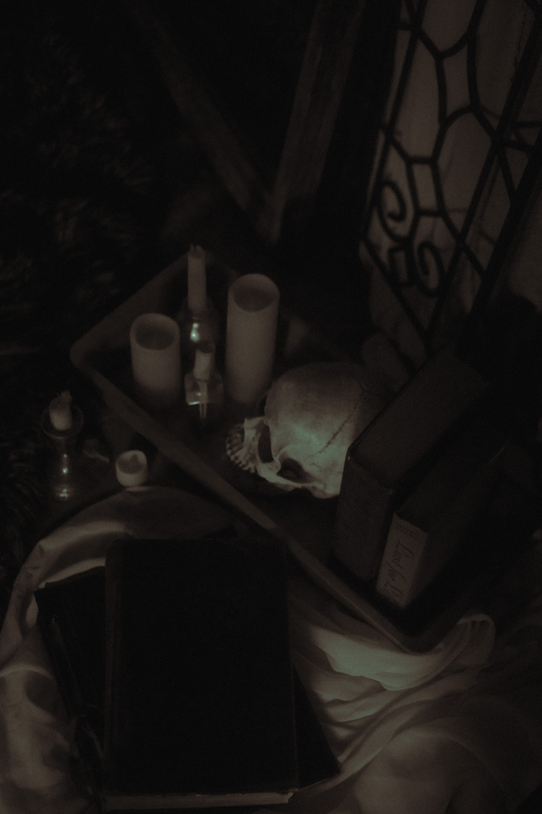
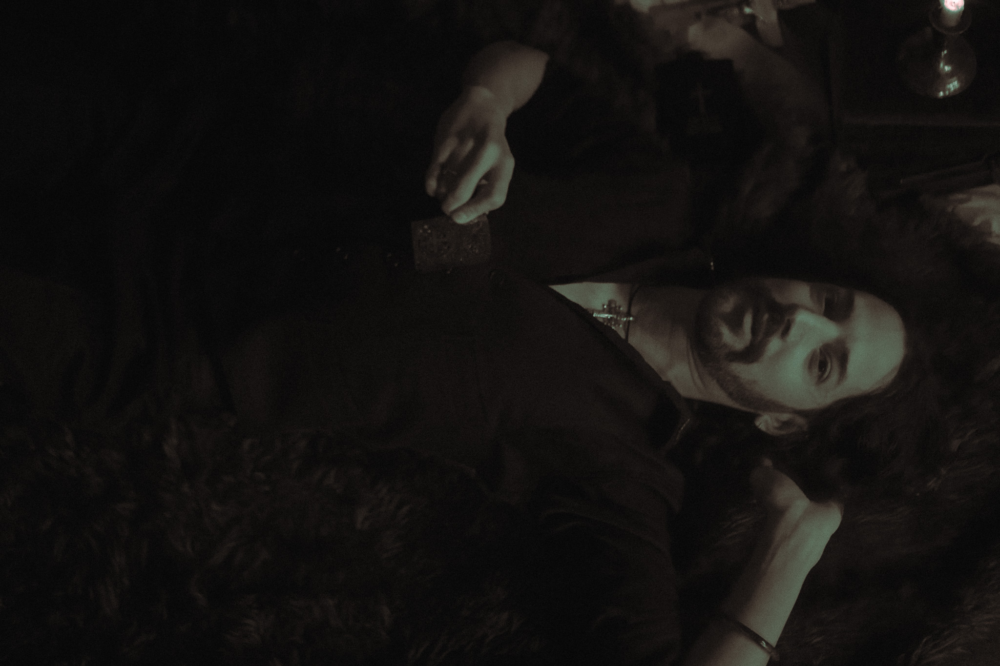
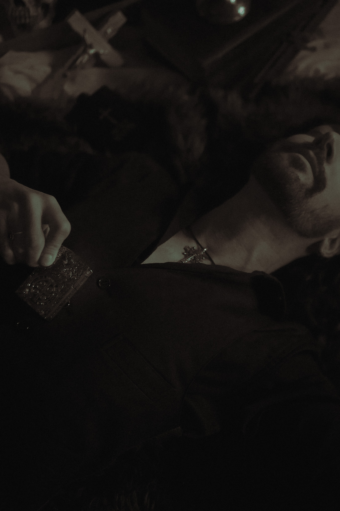
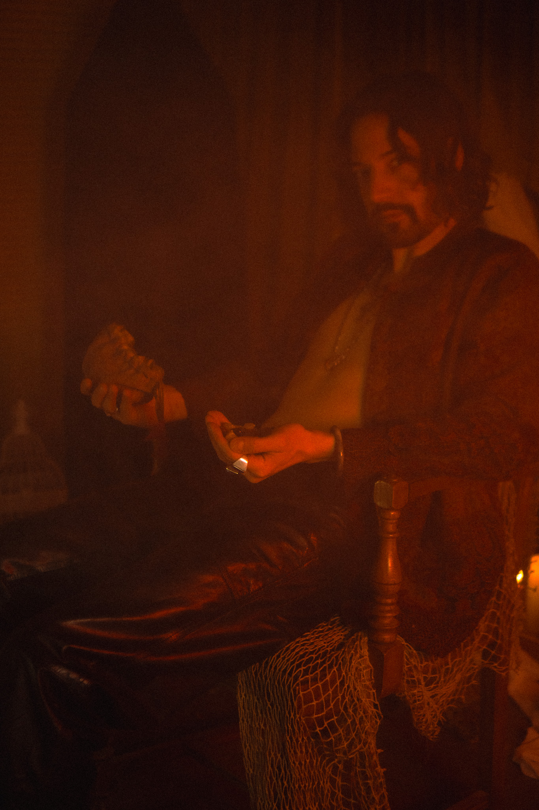
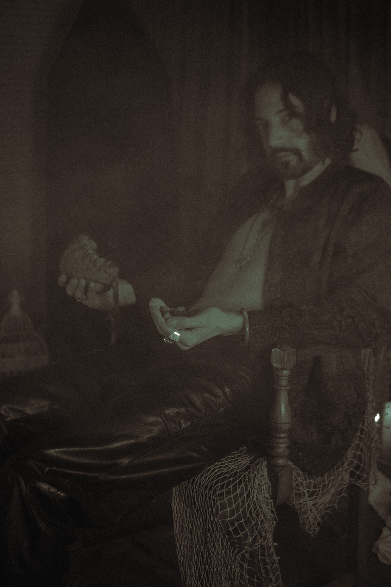

Your journey begins with this track
Step deeper into the world behind the voice





The mirror cracks it hums a tune
A quiet hymn beneath the moon
Reflections scream they always do
Shadows crawl inside the room
[Prechorus] Do you feel it Feel it breaking
The edge of something cold and shaking
[Chorus] Shattered glass soul It cuts It bleeds
A thousand whispers A thousand needs
Shattered glass soul It falls It fades
Caught in the light of the lives we made
[Verse 2] A harp string breaks it sighs goodbye
Notes dissolve they drift they die
The piano weeps it knows the truth
Keys worn smooth by hands of youth
[Prechorus] Can you hear it Hear it calling
The sound of something always falling
[Chorus] Shattered glass soul It cuts It bleeds
A thousand whispers A thousand needs
Shattered glass soul It falls It fades
Caught in the light of the lives we made
Written by Zander Figueroa
All Rights Reserved
Copyright 2025 Precognition
Welcome to Precognition,Introducing: PREC0GNITION /ˌprē-käɡˈniSH(ə)n/ — the ability to see what’s coming before it arrives. A vision before reality. A warning before the world ignites. This isn't just a band. It’s a signal. Precognition is sound before impact—pure emotion forged in chaos, sharpened by instinct. We don’t just write tracks—we channel what's on its way. It's intuition turned to audio. Forewarning turned to fire. Our sound is born of trauma, truth, and transformation. It's not background music—it’s a reckoning. Something coming. Something you can't stop. We don’t follow. We foretell. And when the moment hits—we’re already there. This is more than music. This is a premonition. The future has a sound. And it begins now. The Artist Zander (Producer/Singer/Instruments) make Precognition.